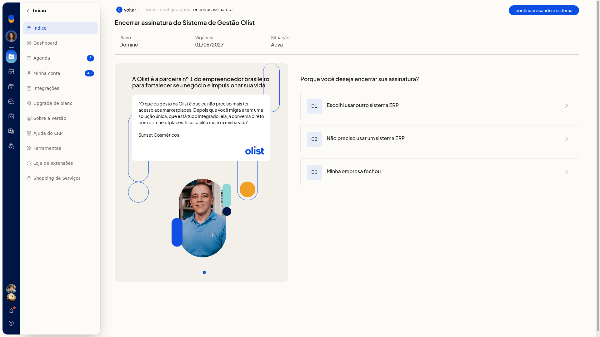
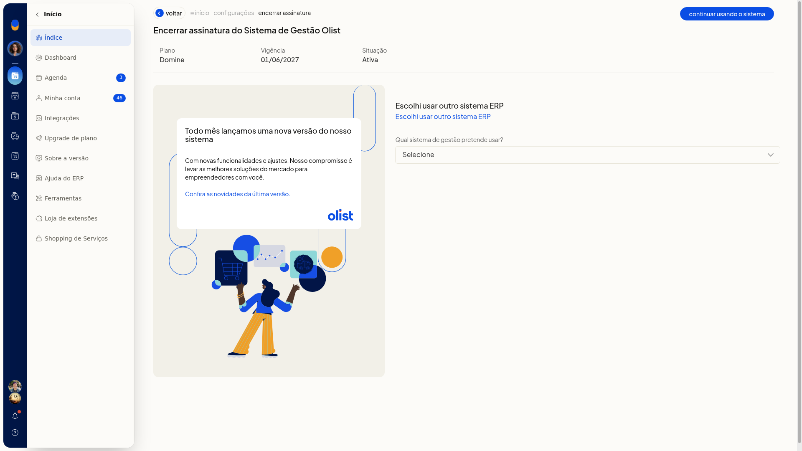
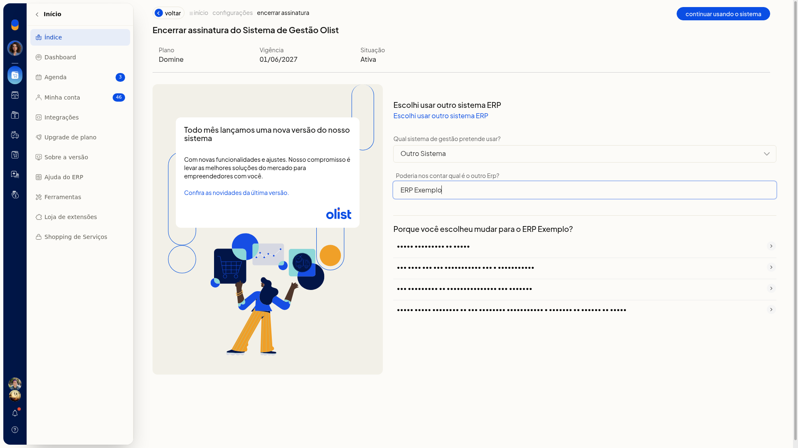
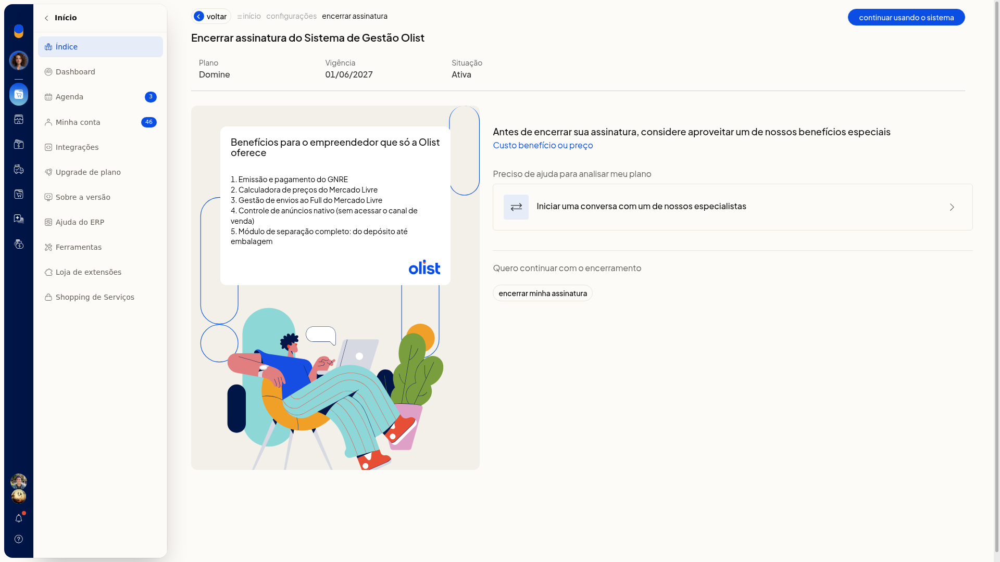
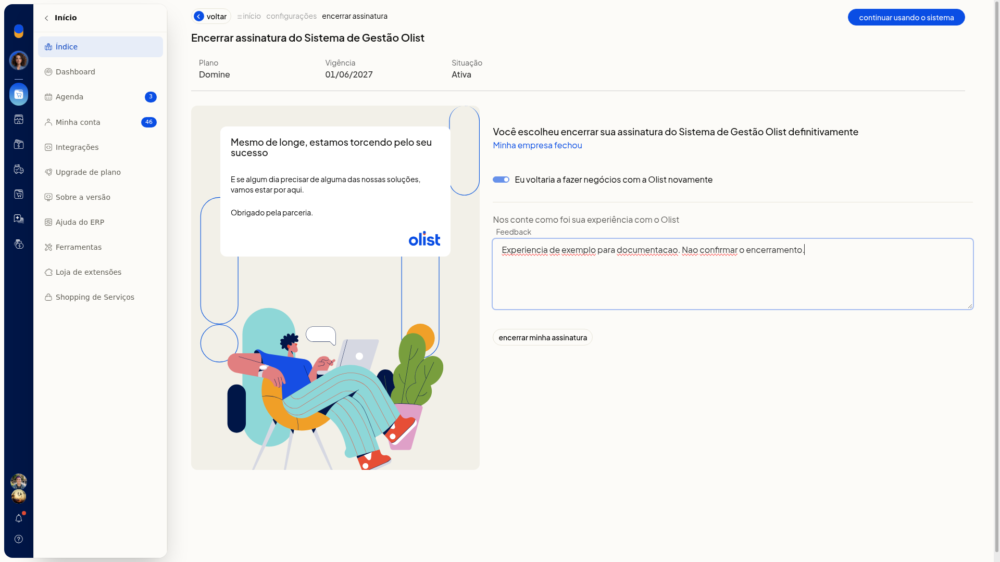

Cancelar a conta do ERP
Para cancelar a conta, você encerra a assinatura do ERP da Olist em Configurações. Informe o motivo e confirme o encerramento, ou desista e continue usando o sistema.
Importante
- A tela descreve o encerramento da assinatura como definitivo.
- Antes de confirmar, você pode desistir em continuar usando o sistema ou em Voltar.
Instruções
-
Acesse Configurações > Configurações ERP > Geral > Encerrar assinatura.
-
Confira Plano, Vigência e Situação.

-
Escolha um motivo:
- 01 Escolhi usar outro sistema ERP
- 02 Não preciso usar um sistema ERP
- 03 Minha empresa fechou
Motivo de usar outro sistema
- Escolha uma opção em Qual sistema de gestão pretende usar?. O campo não é obrigatório.
-
Bling
-
Conta Azul
-
Vhsys
-
Anymarket
-
UpSeller
-
Plugg.to
-
Omie
-
Outro Sistema

-
Preencha Poderia nos contar qual é o outro Erp? ao selecionar Outro Sistema e confira os detalhes do motivo. O campo não é obrigatório.

-
Escolha o detalhe Custo benefício ou preço. A tela oferece conversa com especialista e uma lista de benefícios.

-
Clique em Encerrar minha assinatura para concluir o encerramento.
Motivo de não precisar do sistema ou de empresa fechada
-
Escolha 02 Não preciso usar um sistema ERP ou 03 Minha empresa fechou. A tela informa que o encerramento é definitivo e mostra uma mensagem de parceria.
-
Ajuste Eu voltaria a fazer negócios com a Olist novamente, se quiser. Não é obrigatório.
-
Preencha Feedback, se quiser. Não é obrigatório.

-
Clique em Encerrar minha assinatura para concluir o encerramento.
Informações adicionais
Voltar retorna à lista de configurações
Voltar, depois que você escolhe o motivo, leva à lista de Configurações, e não à lista de motivos. Abra Encerrar assinatura de novo para ver os motivos.